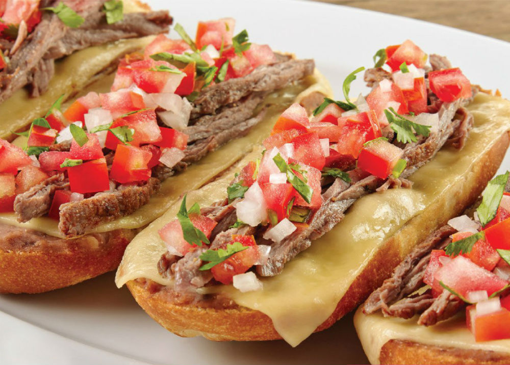

Molletes

Delicious Mexican molletes to enjoy whit the family
- Bread roll's
- Gouda Cheese
- Smashed beans
- Slice of ham (optional)
For the "pico de gallo"
- Tomatoe
- Onion
- Coriander
- lemon(optional)
How to make the "pico de gallo"
- Cut in little cubes the Tomatoe and the Onion
- Also cut in little slices the coriander
- Mix it up in a bowl and add some Salt and lemon
- First you need to slice in two the Bread roll's
- Spread some smashed beans on the bread
- Put a piece of ham(optional) and put a slice of cheese in top of it
- Introduce it to the microwave for about 1 min or to oven at min temperature until the cheese melt
- Put your "pico de gallo" and enjoy!
Return to main page